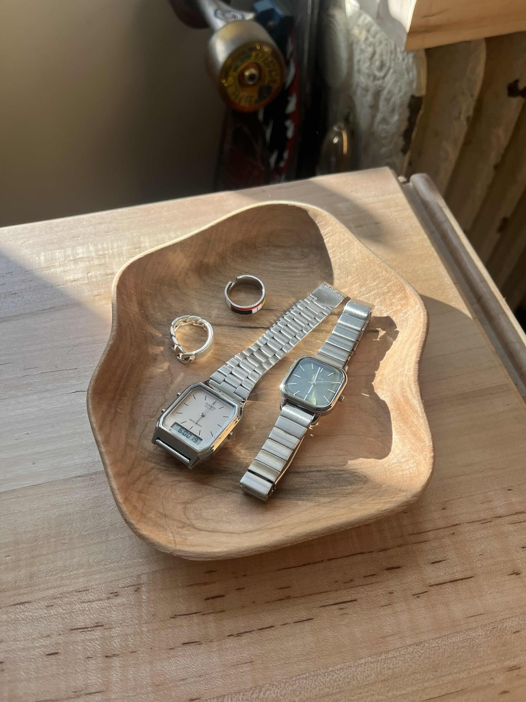
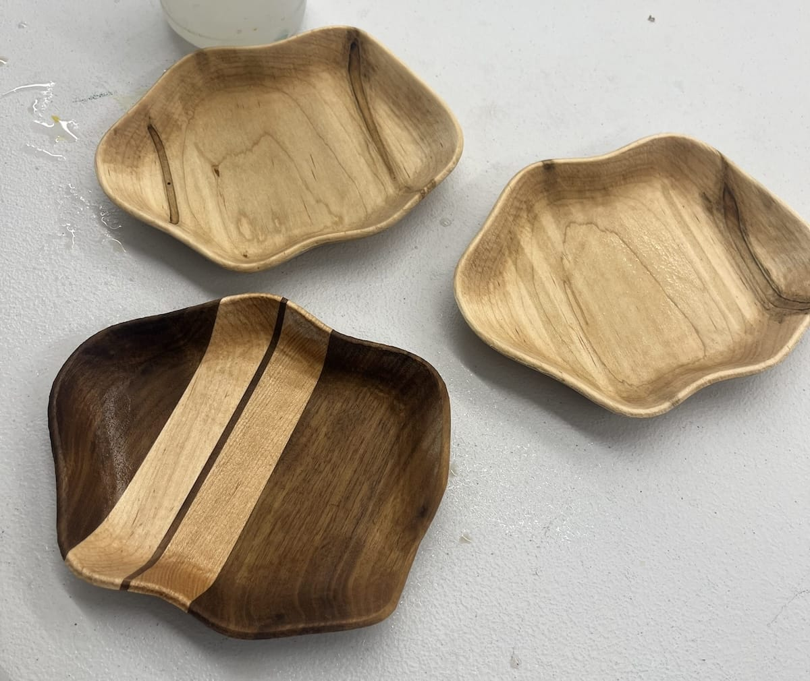
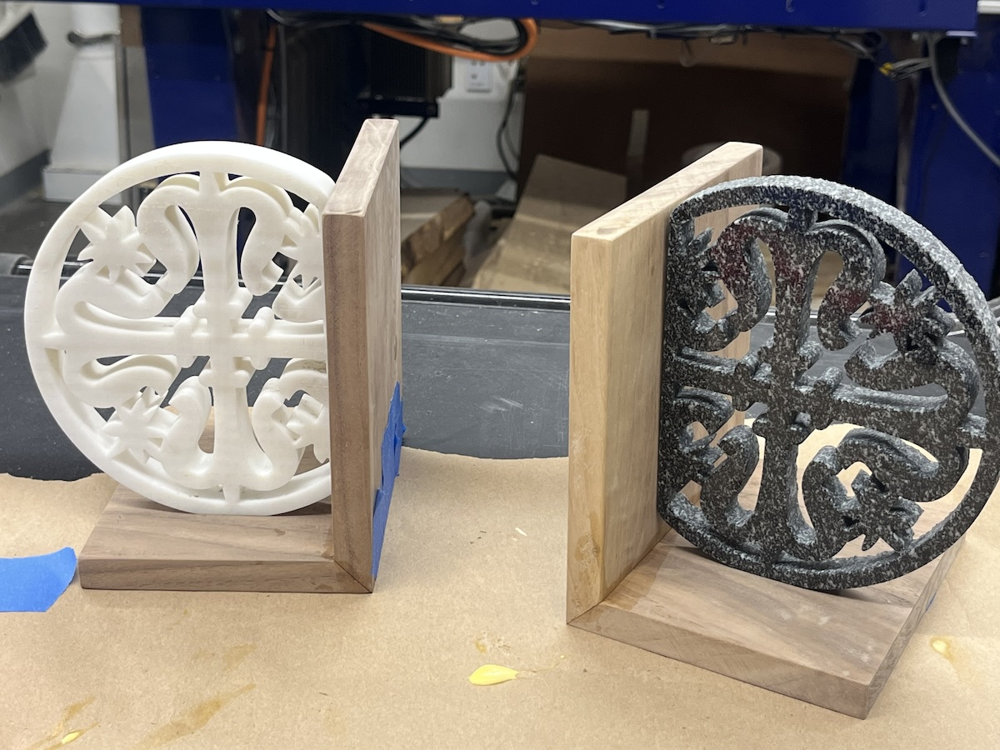
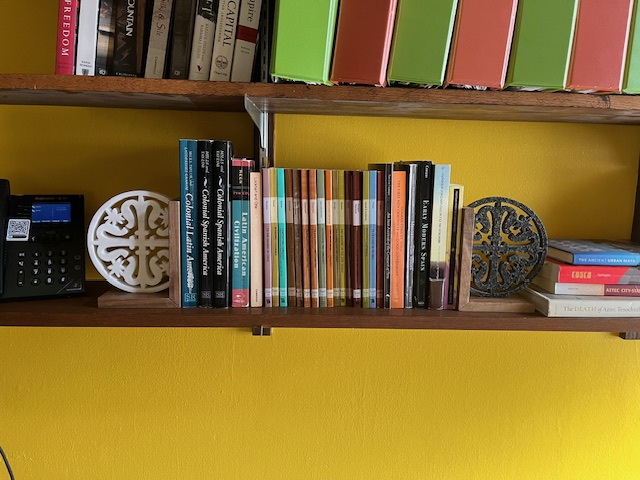
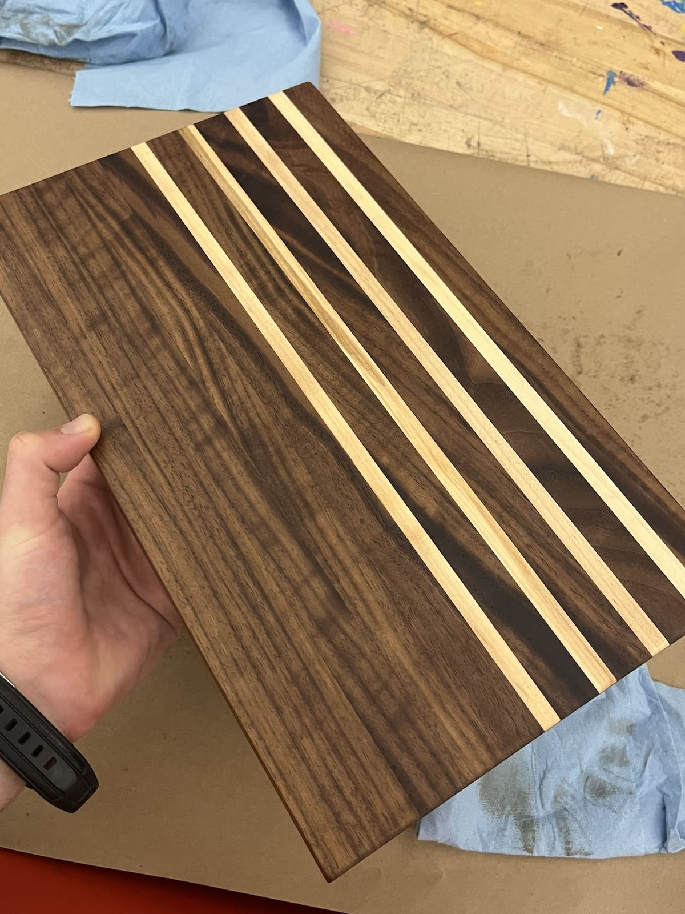
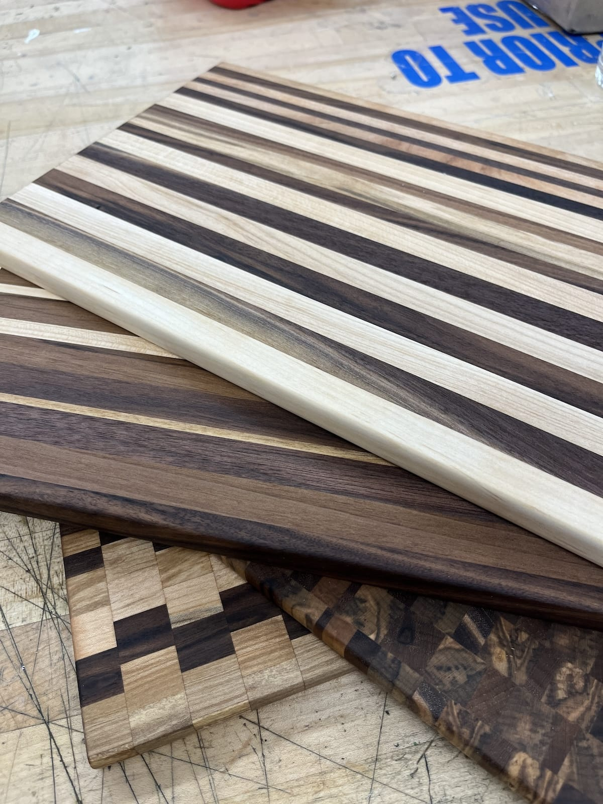
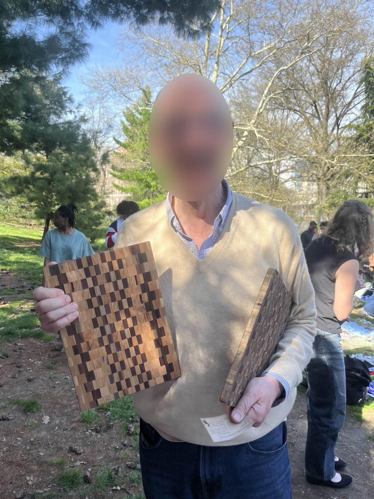
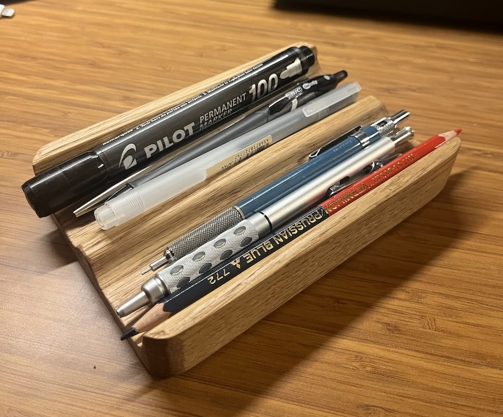

Projects
I enjoy building things. My projects often have some sort of technical aspect or digital-assisted manufacturing component to them. I enjoy getting to bring ideas into the real world with the help of technology. My computer-aided design (CAD) skills are not top-notch but often good enough to produce interesting results. And of course, some projects have no digital aspect to them at all — it’s good to step away and go back to basics.
Figured trays
Blender, Fusion360, CNC Router; walnut, maple, tung oil
My roommate and I made a series of trays using a CNC router. We wanted to go beyond simple, rectangular or circular designs, and create parts with complex geometry that make people wonder how they were made. This took a lot of research and CAM time on my part, to figure out the best way to machine these geometries. To allow the double-sided machining, we first machined a negative mold of the base of the trays out of MDF, which would later be used to hold the rounded bottoms while the top and interiors were machined.


This project was also a lesson in scaling production. After completing one tray, we decided to produce three at once. The required machining time was really long, and it’s hard to say that it was much easier than making one at a time. I put one of the partially-machined blanks in backwards which led to a slightly misshapen bowl, but otherwise there were no really memorable hiccups.
My favorite tray was the split-color one. We didn’t have a piece large enough for the third tray so we merged together walnut and maple for a neat final effect.
Tepotzlan Stone/Walnut Bookends
Fusion360, table saw, waterjet; granite, marble, walnut
These bookends were made as a gift for my professor of Latin American Civilization. They were inspired by a photograph of a sixteenth-century church in Tepoztlán, Mexico, built by indigenous labor. I traced these designs from an image of the church and waterjet marble and granite to sit as as focal points on top of two mitered walnut pieces joined to form the bookends.


Scrap Cutting Boards
Cutting boards are a fun, easy, and useful project, especially when one has a variety of offcuts and scraps. Here are a few of the cutting boards I’ve made. A gentleman and art collector from the Netherlands purchased a pair!



CNC Double-Cup Pentray

I saw a similar design online and wanted to try to recreate it out of some oak I had on hand. I wasn’t thrilled with the end result but it was a nice challenge. I used a few milling operations to try to automate the process as much as possible and minimize any sanding or finishing I had to do.
I finished the piece with a few coats of gunstock finish which fills grain and gives a nice shine and texture. The bottom got a piece of cork for a smooth, grippy base and a nice shadow line along the bottom.
Left: roughing pass with 1/2" ball-nose endmill; Right: parallel smoothing pass with a 1/4" endmill